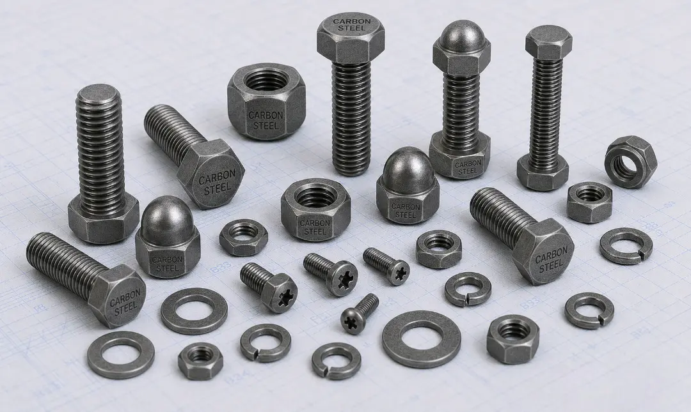

Gururaj Infradesigns supplies Carbon Steel Fasteners in ASTM A307, A325, A490, A354 BD, A449, Grade 2, Grade 5, Grade 8, EN8, EN19, EN24, and C45 grades for construction, engineering, manufacturing, and industrial applications.
Gururaj Infradesigns is a trusted Carbon Steel Fasteners Manufacturer in India, offering a comprehensive range of fastening solutions designed for structural, industrial, construction, and engineering applications. Carbon steel fasteners are widely preferred for their excellent strength, durability, cost-effectiveness, and versatility, making them suitable for a broad range of fastening requirements across multiple industries.
As a leading Carbon Steel Fasteners Supplier in India, we provide high-quality bolts, nuts, stud bolts, washers, anchor bolts, and other fastening products manufactured to meet international standards. These fasteners are commonly used in infrastructure projects, machinery manufacturing, fabrication work, power plants, and general engineering applications where dependable mechanical performance is required.

Carbon Steel Fasteners are among the most widely used fastening products across industrial and commercial sectors. They offer excellent mechanical strength and are available in various grades to suit different load-bearing, structural, and engineering requirements. Depending on the application, carbon steel fasteners can be supplied in plain, zinc-plated, galvanized, or coated finishes to enhance durability and service life.
For applications requiring higher tensile strength, elevated temperature resistance, or demanding service conditions, customers may also explore Alloy Steel Fasteners Manufacturer in India solutions that provide enhanced mechanical performance for critical industrial applications.
| Parameter | Details |
|---|---|
| Product Name | Carbon Steel Fasteners |
| Product Types | Hex Bolts, Stud Bolts, Anchor Bolts, U Bolts, Hex Nuts, Washers, Socket Head Bolts |
| Material Grades | ASTM A307, ASTM A325, ASTM A490, ASTM A354 BD, ASTM A449, Grade 2, Grade 5, Grade 8, DIN 931, DIN 933, EN8, EN19, EN24, C45 |
| Standards | ASTM, ASME, DIN, ISO |
| Thread Type | Metric, UNC, UNF, BSW |
| Size Range | M3 to M100 & Custom Sizes |
| Manufacturing Process | Hot Forged, Cold Forged, CNC Machined |
| Surface Finish | Plain, Black, Zinc Plated, Hot Dip Galvanized |
| Certification | Material Test Certificates Available |
ASTM A307, ASTM A325, ASTM A490, ASTM A354 BD, and ASTM A449 fasteners are widely used in structural steel fabrication, construction projects, bridges, industrial buildings, and heavy engineering applications. These grades are designed to provide reliable strength and long-term fastening performance.
These grades are commonly selected based on strength requirements. Grade 2 fasteners are suitable for general-purpose applications, while Grade 5 and Grade 8 fasteners offer higher tensile strength for demanding industrial and mechanical assemblies.
DIN-standard fasteners are extensively used in machinery manufacturing, industrial equipment, fabrication projects, and engineering applications. They provide dimensional consistency and compatibility with international fastening requirements.
EN-series carbon steel fasteners are known for their excellent strength and machinability. These grades are widely used in automotive components, heavy machinery, engineering equipment, and industrial assemblies requiring dependable mechanical properties.
C45 fasteners offer a good balance of strength, toughness, and wear resistance. They are frequently used in manufacturing, fabrication, and mechanical engineering applications where durability is important.
| Grade | Key Advantage | Common Applications |
|---|---|---|
| ASTM A307 | Economical fastening solution | Construction & General Engineering |
| ASTM A325 | Structural strength | Steel Structures & Bridges |
| ASTM A490 | High tensile performance | Heavy Structural Projects |
| ASTM A354 BD | High-strength bolting | Industrial Equipment |
| Grade 5 | Medium-high strength | Automotive & Machinery |
| Grade 8 | High-strength applications | Heavy Equipment |
| EN24 | Excellent mechanical properties | Engineering Components |
| C45 | Good strength and machinability | Manufacturing & Fabrication |
Selecting the correct carbon steel fastener grade helps ensure optimal performance, safety, and service life. Factors such as load requirements, operating conditions, environmental exposure, and industry specifications should be considered during material selection.
| Industrial Requirement | Carbon Steel Advantage |
|---|---|
| Cost-Effective Fastening | Provides excellent value for general industrial applications. |
| High Mechanical Strength | Suitable for structural and load-bearing assemblies. |
| Easy Availability | Available in a wide range of grades and specifications. |
| Versatile Applications | Used across construction, engineering, and manufacturing sectors. |
| Easy Fabrication | Supports machining, threading, and customization requirements. |
| Reliable Performance | Delivers dependable fastening for everyday industrial use. |
Carbon steel fasteners continue to be one of the most preferred fastening solutions due to their balance of strength, affordability, and versatility. Their wide availability and adaptability make them suitable for both small-scale and large industrial projects.
Carbon steel fasteners play a crucial role in structural steel fabrication, commercial buildings, bridges, and infrastructure developments where strength and reliability are essential for long-term performance.
Industrial manufacturers rely on carbon steel fasteners for machinery assembly, equipment fabrication, and production systems requiring dependable fastening solutions.
Carbon steel fasteners are widely used in vehicle manufacturing, automotive components, trailers, and transportation equipment where durability and mechanical strength are important.
Power generation facilities and utility infrastructure projects use carbon steel fasteners for structural supports, equipment installation, and industrial maintenance requirements.
Fabrication companies utilize carbon steel fasteners in custom steel structures, industrial assemblies, and engineering projects requiring cost-effective fastening solutions.
Gururaj Infradesigns is a trusted Carbon Steel Fasteners Stockist in India, maintaining ready stock of bolts, nuts, stud bolts, washers, anchor bolts, and other fastening solutions in various grades and specifications to support industrial procurement requirements.
As a reliable Carbon Steel Fasteners Supplier in India, we serve engineering companies, fabricators, EPC contractors, construction firms, and industrial buyers with consistent quality products, prompt delivery schedules, and dependable supply support for projects of all sizes.
At Gururaj Infradesigns, quality is an integral part of our manufacturing and supply process. Our carbon steel fasteners are produced using quality-tested materials and are inspected for dimensional accuracy, thread quality, and overall performance to ensure dependable service in industrial applications.
As an ISO Certified Company, we are committed to maintaining consistent quality standards and delivering reliable fastening solutions that meet the expectations of diverse industries.
The performance and safety of industrial assemblies depend on the quality of their fastening components. Gururaj Infradesigns supplies carbon steel fasteners designed to provide dependable strength, durability, and long-term performance across a wide range of industrial and structural applications. Our commitment to product quality, reliable supply, and customer-focused service enables businesses to source fastening solutions with confidence while supporting the success of their engineering and infrastructure projects.